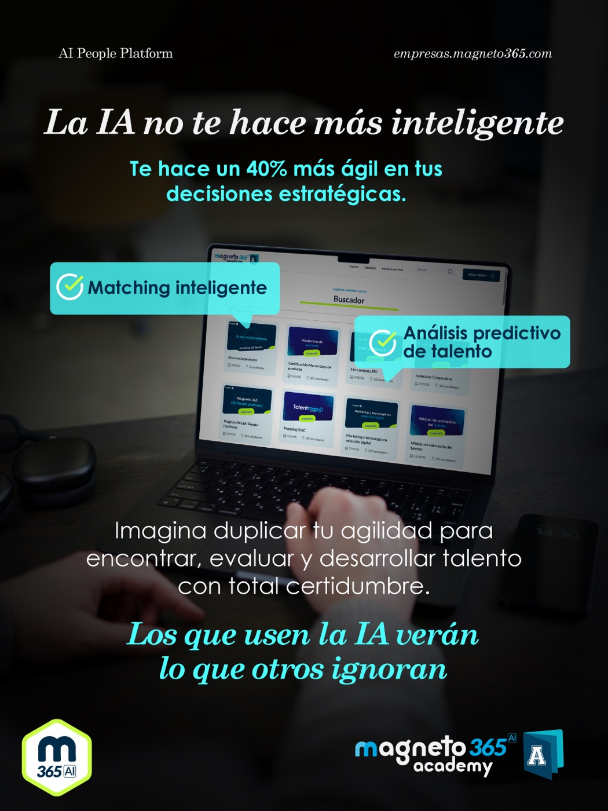

Revelar de a poco
La expectativa plantea preguntas; el lanzamiento las responde. Cada fase tiene un trabajo distinto.
Campaña de lanzamiento de Magneto 365 AI Academy, el programa para que los equipos de recursos humanos dominen la IA en reclutamiento. Tres fases (expectativa, lanzamiento y contenido educativo) con un tono premium dirigido a líderes de talento.

La academia necesitaba diferenciarse del resto de la comunicación de Magneto: fotografía editorial en clave baja, serif itálica y acentos en cian. El resultado se siente más cercano a una escuela de negocios que a una herramienta de software.

 1 · Portada
1 · PortadaLa expectativa plantea preguntas; el lanzamiento las responde. Cada fase tiene un trabajo distinto.
La campaña habla de IA con fotografía de personas: el protagonista es el profesional que aprende.
Las cuatro capacidades se repiten en todas las piezas para que el programa se recuerde.